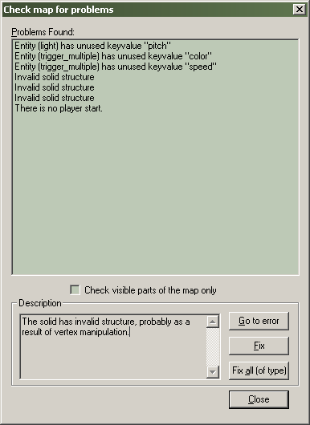

Dialogs: Check For Problems
Check for problems Shortcut: ALT+P
Opening this dialog will cause Hammer to run through your map and notify you of any errors it finds.

When you select one of the errors, the entity/solid will be highlighted (if applicable) and three options become available to you.
Go to error
This button will center the 2D windows on the selected error object.
Fix
This button will attempt to fix the currently selected error.
Fix all (of type)
Selected this button will fix all errors of the selected type.
Note: The Check for Problems command looks for errors in unmodified, supported game types (Half-Life 2 , Counter-Strike, etc). If you are creating maps for a proprietary game with your own game code and .FGD, some or all of the errors generated by this command may not be applicable.
Some common errors that may occur in your maps...
Invalid solid structure
The solid has invalid structure, probably as a result of vertex manipulation. What this means is that the solid is not convex in every plane. You will need to either fix it, or if this is not possible, rebuild it.
Solid Entity (entity_name) is empty.
This solid-entity contains no solids. Fixing the error deletes the entity.
Entity (entity_name) has unused keyvalues.
The entity contains keyvalues (variables) that are not used in its class. You can fix this error with the Fix button. Note that this error will pop up if you are taking advantage of custom compile tools which add keyvalues to entities, but you are not using an FGD file that has these special keyvalues listed.
There is no player start.
There is no info_player_start entity in the map, or the start point was embedded in a solid object. This error could also occur if you are using the Edit Cordon Bounds tool, and the player start entity was not inside the cordon area marked. If no player start point was created, use the Entity Tool to create one.
Related Topics
Entity Guide for entity specific information
© 2004 Valve Corporation. All rights reserved. Valve, the Valve logo, Half-Life, the Half-Life logo, the Lambda logo, Steam, the Steam logo, Team Fortress, the Team Fortress logo, Opposing Force, Day of Defeat, the Day of Defeat logo, Counter-Strike, the Counter-Strike logo, Source, the Source logo, Hammer and Counter-Strike: Condition Zero are trademarks and/or registered trademarks of Valve Corporation. Microsoft and Visual Studio are trademarks and/or registered trademarks of Microsoft Corporation. All other trademarks are property of their respective owners.